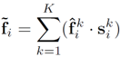
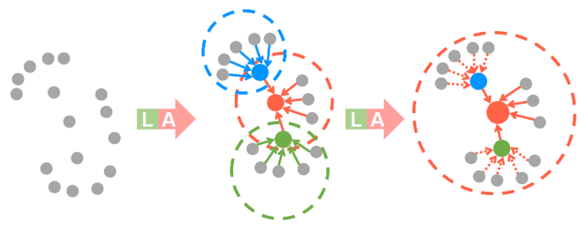
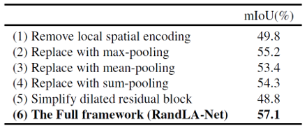
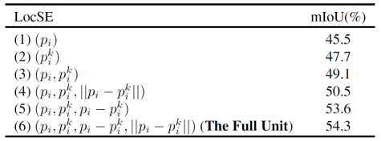

RandLA-Net - Efficient Semantic Segmentation of Large-Scale Point Clouds 리뷰
오늘은 2020년 CVPR에서 발표한 RandLA-Net: Efficient Semantic Segmentation of Large-Scale Point Clouds 논문에 대한 리뷰를 진행해보려 합니다.
RandLA-Net은 큰 크기의 3D point cloud 데이터셋에 대해 시간 및 메모리 측면에서 효율적으로 Segmentation task를 수행하고, 결과적으로 높은 Segmentation 정확도를 보여주었습니다. 그렇다면 RandLA-Net에 대한 소개를 시작하겠습니다.
Large-scale Point Clouds
PointNet을 시작으로, deep learning network를 이용해 3D point cloud 데이터를 처리하는 연구가 활발히 진행되고 있습니다. 하지만 몇몇 모델(Superpoint Graphs)을 제외한 대부분의 모델들은 연산량 및 메모리의 한계때문에 작은 크기의 점들로 구성된 point cloud 데이터만을 input으로 넣을 수 있고, 결국 공간을 1x1 제곱미터 또는 4,096개씩 단위로 subsampling해서 input으로 넣어주곤 합니다.
Subsampling을 하지 않은 large-scale point cloud 데이터셋을 그대로 이용하게 되면 subsampling 과정을 통해서 손실되는 정보가 없고, 공간 전체의 구조를 보면서 feature를 추출할 수 있기 때문에 복잡하고 큰 기하학적 구조도 학습할 수 있으며, voxelization이나 graph construction 등 별도의 전/후처리 과정이 필요하지 않습니다. 하지만 연산량 및 메모리적으로 무거워지고, 복잡한 기하학적 구조 때문에 학습이 잘 되지 않을 수도 있습니다.
기존 모델들에서 연산량이 많아 병목이 생기는 부분은 점들에 대해 down-sampling을 진행하는 부분이었습니다. 예를 들어 PointNet이나 GACnet, Point Transformer 등은 모두 farthest point sampling(FPS) 알고리즘을 통해 점들을 선택하는데, FPS 알고리즘의 시간복잡도는 O(N2) 으로 점들의 개수의 제곱에 비례해서 커지게 됩니다. 따라서 점들의 개수가 많아지면, 계산량이 급격하게 많아져 학습 시간이 길어지고 학습의 효율성이 떨어집니다.
이를 해결하기 위해 RandLA-Net에서는 random sampling (RS)을 이용해 down-sampling을 진행했습니다. Random sampling은 O(1) 의 시간복잡도를 가진 연산이기 때문에, 점들의 개수가 많아져도 연산량이 늘어나지 않습니다. 다만 RS 알고리즘은 임의로 점들을 선택하기 때문에, 이를 이용하는 경우 중요한 점들을 소실하여 전체 point cloud에 대한 대표성을 잃어버릴 수 있습니다. RandLA-Net에서는 이를 보완하기 위해 강력한 local feature aggregation module을 제안하여 point cloud의 중요한 feature들을 유지할 수 있도록 네트워크를 설계했습니다.
Efficient Sampling
Point cloud를 구성하는 점들의 개수를 줄이면서 인접한 점들의 특징을 통합해주는 downsampling 과정은 convolution 기반 네트워크의 pooling layer와 같은 역할을 하는 중요한 과정입니다. 지금까지 연구된 다양한 downsampling 방법론들을 소개하고 장단점 및 특징을 정리해보겠습니다.
- Farthest Point Sampling (FPS)
FPS는 N개의 점들 중 서로 가장 거리가 먼 K개의 점들을 추출하는 sampling 알고리즘입니다. 전체 point set에 대해서 골고루 점들을 추출할 수 있기 때문에 정보를 잘 소실하지 않고, 이 때문에 가장 널리 이용되는 sampling 알고리즘입니다. 하지만 시간복잡도가 O(N2) 으로 크기 때문에, 점들의 개수가 많은 point set에 이용하기에는 연산량이 많아 비효율적입니다.
- Inverse Density Inportance Sampling (IDIS)
IDIS는 각 점들의 density를 측정하고, 그에 따라 N개의 점들 중 density가 높은 K개의 점들을 추출하는 sampling 알고리즘입니다. 시간복잡도는 O(N) 으로 FPS보다 효율적입니다. 다만 density가 높은 점들 위주로 sampling을 하기 때문에, sparse하지만 중요하게 여겨지는 일부 정보들을 소실할 수 있습니다. 또한 O(N) 의 시간복잡도로는 실시간 3D segmentation을 수행하기에 여전히 연산량이 많습니다.
- Random Sampling (RS)
RS는 N개의 점들 중 임의로 K개의 점들을 추출하는 sampling 알고리즘입니다. 시간복잡도는 O(1) 로 전체 점의 개수에 무관하게 결정됩니다. 이렇듯 RS는 계산량 측면에서 가장 효율적이지만, sampling한 점들이 전체 점들을 대표하지 못하고 중요한 정보를 잘 잃어버리기 때문에 일반적으로 사용하지 않는 방법입니다.
- Generator-based Sampling (GS)
GS는 학습된 네트워크를 통해 point cloud를 잘 대표할 수 있는 점들을 추출합니다. 하지만 기존의 점들과 sampling 이후의 점들을 matching하는 과정에서 FPS 알고리즘이 들어가기 때문에, 계산량 측면에서 비효율적입니다.
- Continuous Relaxation based Sampling (CRS)
CRS는 모든 점들에 대한 가중합을 통해 sampling point들을 추출하는 방법이라고 합니다. 이 때 모든 점들의 feature vector를 input으로 받는 아주 큰 차원의 weight matrix가 필요하기 때문에 메모리 측면에서 비효율적입니다. 일반적으로 점들의 개수가 많아지면, 수백GB의 GPU 메모리가 필요하기 때문에 잘 사용하지 않는다고 합니다.
- Policy Gradient based Sampling (PGS)
PGS는 Markov decision process를 통해 sampling을 위한 확률분포값을 학습합니다. N개의 점들 중 어떠한 K개의 점들을 선택했을 때 reward가 가장 높을 지를 exploration 과정을 통해서 학습하는데, 점들의 개수가 많아지게 되면 exploration space가 커지게 되어 reward가 높은 지점을 잘 찾지 못하게 됩니다. 즉, large point cloud 데이터셋에 대해서는 손실함수가 잘 수렴하지 않아 네트워크 학습이 잘 되지 않는다고 합니다.
정리해보면, FPS, IDIS, GS는 연산량 측면에서 비효율적이고, CRS는 메모리 측면에서 비효율적이며, PGS는 학습이 잘 안된다는 문제가 발생합니다. 반면에 random sampling은 계산량 측면에서 효율적이고 메모리가 많이 필요하지도 않습니다. 따라서 large-scale point cloud 데이터셋을 다루기에는 가장 적절한 sampling 기법입니다. 다만, random sampling는 임의의 점들을 선정하는 방법이기 때문에 sampling 과정에서 중요한 점들이 소실될 수 있습니다. 이를 보완하기 위해서 RandLA-Net에서는 강력한 local feature aggregation module을 제안하였습니다.
Local Feature Aggregation
RandLA-Net은 Dilated Residual Block을 이용해서 feature vector를 통합해주었습니다. Dilated residual block은 Local Spatial Encoding(LocSE) block과 Attentive Pooling block 으로 구성되어 있습니다. 각각이 어떤 역할을 하는지 확인해보겠습니다.
- Local Spatial Encoding (LocSE)
LocSE block은 크게 두 부분으로 구성되어 있습니다. 우선 하나의 중심점(p)에 대해 인접한 K개의 점들을(p1 ~ pk) KNN 알고리즘을 통해 선정합니다. 이후 중심점과 각 인접한 점 사이의 위치 관계를 담은 relative point position vector를 위와 같은 형식으로 추출합니다. 이 때 p 와 pk 는 점들의 xyz 좌표를 의미하고, +는 concatenation 연산을, ㅣㅣ는 유클리드 거리 연산을 의미합니다. Relative point position vector는 총 10차원의 벡터이며(3+3+3+1), 중심점과 주변 점들 사이의 공간적인 위치 정보를 담고 있습니다.
이후 각 벡터를 MLP layer에 통과시켜서 feature vector와 같은 차원으로 변환하는데, 이를 relative point position encoding 이라고 부릅니다. 논문에서는 relative point position encoding 과정이 기하학적 패턴이나 복잡한 점들 간의 구조를 파악하는 데 효과적이라고 이야기하고 있습니다.
- Attentive Pooling

LocSE를 통해서 얻은 spatial encoding vector는 feature vector와의 concatenation을 통해 총 K x 2d 크기의 행렬로 변환됩니다. Attentive pooling은 K개의 vector에 attention score를 곱해주어서 하나의 통합된 feature vector를 생성하는 과정입니다. 이 때 Attention score는 local feature vector를 input으로 받아서 shared MLP와 softmax layer를 통과시켜 얻었습니다.

이후 K개의 vector에 attention score를 가중합하면, 주변 점들의 위치 관계와 특징을 담은 informative feature vector f 를 얻을 수 있습니다.
- Dilated Residual Block
Dilated residual block은 앞서 설명드린 LocSE block과 attentive pooling block으로 구성되어 있습니다. Down-sampling을 통해 점들의 개수를 줄여주면, 각 점들에 대한 receptive field를 확장시켜서 feature vector를 통합해주는 것이 중요합니다. 실제로 CNN의 경우 convolution이 반복적으로 일어나면서 feature의 크기가 줄어들기 때문에, feature vector의 각 pixel에 대한 receptive field는 커지게 됩니다.

LocSE-Attentive pooling으로 이어지는 feature aggregation 과정의 경우, 인접한 K개의 점들의 특징이 집약된 feature vector를 얻을 수 있습니다. LocSE-Attentive pooling 과정을 두 번 거치게 되면, 인접한 각 점들도 K개의 점들의 특징이 통합된 점들이기 때문에, 위의 그림처럼 대략 K^2 개의 점들의 공간적 관계와 특징을 통합한 벡터를 얻을 수 있습니다.
Feature aggregation 과정은 반복하면 할수록 receptive field도 커지고 feature vector의 정보량도 늘어나지만, 연산 효율이 떨어지고 over-fitting에 취약해집니다. 따라서 RandLA-Net에서는 하나의 dilated residual block당 LocSE-Attentive pooling을 두 번 반복해서 적절한 범위의 점들을 통합해주었습니다.
Training
전체 RandLA-Net은 위의 그림과 같은 구조로 구성되었습니다. 학습시에는 Adam optimizer를 이용해주었고, nearest neighbor의 개수는(K) 16을 기본으로 설정했습니다. 또한 대략 10만개 정도의 고정된 점들에 대해 batch 단위로 학습을 진행하였고, test 과정에서는 전체 점들을 한번에 넣어주었습니다.
Experiment
- Efficiency of Random Sampling
우선 random sampling의 효율성을 확인하기 위해, 앞서 설명한 다양한 sampling 방법들을 이용해 시간 및 메모리 측면에서의 효율성을 측정했습니다.
결과적으로 적은 수의 점들을 대상으로는 sampling 방법들 사이에 큰 차이가 없지만, 점들의 개수가 많아지면 많아질수록 FPS/IDIS/GS/CRS/PGS는 학습 시간이 길거나 메모리를 많이 소비하는 문제를 야기했습니다. 논문에서는 이러한 비효율성 때문에 대부분의 모델들(PointNet, GACNet 등)의 학습 과정이 적을 수의 점들로 구성된 point cloud dataset으로만 진행되었다고 주장했습니다. 그에 비해 RS는 높은 시간-메모리적 효율성을 보여주었습니다.
- Efficiency of RandLA-Net
위의 표는 많은 수의 점들로 구성된 point cloud dataset에 대한 여러 모델들의 효율성을 비교한 결과입니다. 각 모델의 parameter 개수 및 SemanticKITTI dataset에 대한 학습 시간을 비교하였습니다. 또한 전체 점들을 한번에 넣었을 때 추론 시간도 측정하였습니다. RandLA-Net은 모델 크기가 크지 않음에도 불구하고, 가장 빠른 학습 시간 및 추론 시간을 보여주었습니다.
3D Segmentation results
- S3DIS
RandLA-Net은 다양한 dataset에 대해 3D semantic segmentation을 수행하였습니다. 우선 실내 dataset인 S3DIS에 대해 SOTA에 준하는 성능을 보여주었습니다.
- Semantic3D
또한 실외 dataset인 Semantic3D에 대해서는 기존 KPConv의 성능을 뛰어넘으며 SOTA의 성능을 보여주었습니다.
- Semantic-KITTI
마지막으로 SLAM LiDAR dataset인 Semantic-KITTI에 대해서도 SOTA에 준하는 성능을 보여주었습니다. RangeNet 등의 projection 기반 방법들도 좋은 성능을 보여주었는데, RandLA-Net은 RangeNet에 비하면 40배 적은 parameter로 구성되어 있기 때문에 연산량 차원에서 훨씬 효율적이라고 이야기합니다.
Ablation Study

RandLA-Net의 구성 요소들을 약간 바꿔보는 형식으로 제거 학습을 진행했습니다. LocSE를 없애거나 attentive pooling을 max-, mean-, sum-pooling 등으로 바꿔보았습니다. 그리고 dilated residual block에서 feature aggregation unit을 1개로 줄여보는 등의 실험을 했는데, 모두 기존의 모델 구조보다 저하된 성능을 보여주었습니다.

또한 LocSE block에서 relative point position vector의 구성에 따라 segmentation 결과가 어떻게 변하는지 비교해보았습니다. Relative point position vector를 구성하는 여러가지 요소들 중에, 특히 상대적인 위치 정보에 대한 component가 작은 공간의 기하학적 구조를 담고 있기 때문에 중요한 역할을 한다는 것을 알 수 있었습니다.
Conclusion
RandLA-Net은 downsampling 방법으로 RS를 처음으로 이용하여 연산량 측면에서 효율성을 극대화하였습니다. 사실 RS는 sampling의 안정성 측면에서 조금 극단적인 측면이 있어서 잘 이용되지 않았었는데요. Feature aggregation만 잘 해준다면 random하게 점들을 골라도 충분히 좋은 성능이 나온다는 것을 보여주는 연구였습니다. 다양한 dataset에서 좋은 성능을 나타냈기 때문에 상황이 맞는다면 고려해볼만한 모델이라고 생각합니다. 궁금한 점이 있으시다면 댓글로 남겨주세요. 읽어주셔서 감사합니다 :)
참고 문헌 및 출처